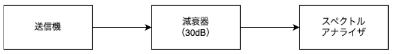
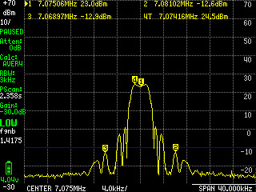

ADX-Sに対してJARDの新スプリアス確認保証を取得する
はじめに
ADX-SはFT8やWSPRに対応した安価な無線機キットです。自作無線機器でアマチュア無線局を開局するには、JARDによる新スプリアス確認保証の取得が必要です。今回、作成した無線機（ADX-S）に対して新スプリアス確認保証を取得した内容を簡潔にまとめます。
やったこと
- ADX-Sの組み立て
- tinySAを用いてJARDの新スプリアス確認保証を取得
ADX-Sについて
ADX-Sは、FT8やWSPRに対応した安価な無線機キットです。 表面実装部品を用いないため製作が容易で、制御はホスト端末のオーディオ出力とマイク入力を使うため追加の専用機器を必要としません。さらに、フィルタモジュールを交換することで複数バンドに対応できます。
新スプリアス確認保証の取得
新スプリアス規格について
新スプリアス規格では、スプリアス領域だけでなく帯域外領域も含めた不要発射全体の許容値をクリアする必要があります。この際、スプリアス領域の測定は実際に変調をかけた状態で、帯域外領域の測定は無変調で行います。なかなか厳しい基準です。
新スプリアス規格の許容値
アマチュア無線の新スプリアス規格の許容値を以下にまとめました。
| 空中線電力 | スプリアス領域の許容値 | 帯域外領域の許容値 |
|---|---|---|
| 1W以下 | 100μW(-10dBm)以下 | 50μW (-13dBm) 以下 |
| 1Wを超え50W以下 | 1mW以下 & 基本周波数の平均電力より60dB低い値 | 基本周波数の搬送波電力より60dB低い値 |
| 50Wを超える | 1mW (0dBm)以下 & 基本周波数の平均電力より60dB低い値 | 50μW (-13dBm)以下 or 基本周波数の搬送波電力より70dB低い値 |
また、帯域外領域とスプリアス領域の境界は必要周波数帯幅の±250%で定義されます。この境界は周波数帯によって変わります。
測定上の課題と対策
今回使用したtinySAはコストパフォーマンスが非常に優れている測定器です。しかしながら、ノイズフロアが-50dB程度という制約があります。そのため、1Wを超える出力では帯域外領域での-60dBcという規格値を正確に測定できません。
ここで重要な点に気づきました。1W以下なら許容値が絶対値（dBm）で規定されています。具体的には、スプリアス領域では-10dBm以下、対域外領域では-13dBm以下です。従って、これならtinySAでも測定可能です。
測定条件と実施内容
以下の条件で測定を実施しました。
- 送信出力設定：0.5W（約27dBm）に制限
- 測定周波数：7MHz（fc）
- 必要周波数帯幅（Bn）：8kHz
- 外部固定減衰器：30dB（基準レベル補正用）
- スペアナ内部ATT：0dB
- 測定範囲：
- 帯域外領域：fc ±20kHz（Span 40kHz）
- スプリアス領域：9kHz～350MHz
必要周波数帯幅について触れておきます。本来FT8の無変調信号は急峻なスペクトルを持つはずです。しかしながら、実際に測ってみるとある程度の広がりを持っていました。これはADX-Sのクロック系の歪みが原因と考えています。したがって、今回の測定ではBnを8kHzとしました。このことから、私の無線機は無変調時にBn=8kHzの信号を出力する無線機として認証をいただきました。
測定系はシンプルです。送信機の出力に30dBの固定減衰器を入れます。それをスペアナに接続するだけです。

測定結果
帯域外領域（fc±20kHz）
まずは帯域外領域の測定結果です。Span 40kHz、RBW 3kHzで測定しました。

青線が許容値の-10dBmを示しています。最大ピークは-12.7dBmです。許容値に対して約3dBのマージンがあることが確認できます。
スプリアス領域（9kHz～350MHz）
スプリアス領域の測定は広い周波数範囲をカバーする必要があります。そのため、2段階に分けて測定しました。
まずは9kHz～30MHzの範囲です。

最大ピークは-25.9dBmです。許容値の-13dBmに対して12dB以上のマージンがあることを確認できます。基本波の2次高調波（14MHz）と3次高調波（21MHz）が見えます。しかし、これらも十分に抑制されています。
続いて9kHz～350MHzの全体像です。

最大ピークは-24.9dBmです。許容値をに対して十分なマージンがあることが確認できます。100MHz付近まではスプリアスが見えますが、それ以降はノイズフロアに埋もれるレベルまで減衰しています。
提出資料の準備
以上の測定結果を元に、その他参考資料としてこの資料をJARDへ提出しました。
また、電波の強度の関する安全施設の届出書も同様に提出する必要があります。今回は電波の強度に対する安全施設についてのページにある簡易な適合確認書（半波長ダイポールアンテナ）を用いて作成しました。
JARDによる基本保証の申込み
準備した資料を元に、基本保証業務のご案内に従って申し込みを行いました。 私のケースでは迅速に対応頂くことができ、申請から１週間程度で保証書を送付して頂けました。